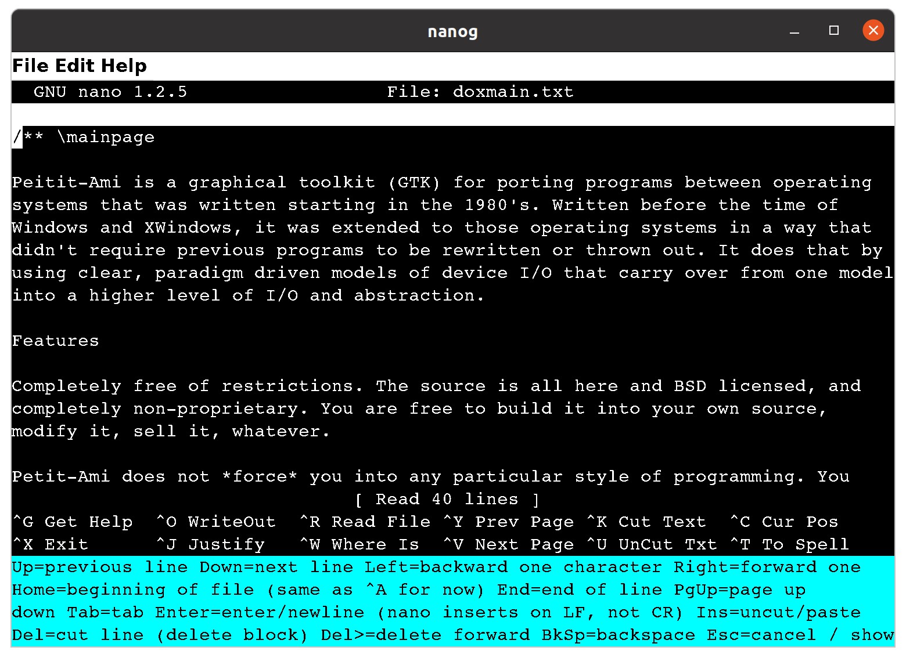

Amitk is a toolkit based on the idea that carefully crafted display paradigms can carry forward. Amitk starts with the serial display paradigm and carries that into a terminal oriented paradigm, then to a fully graphical and windowed paradigm.
The toolkit provides a unified API across display models, so the same source code can target serial console, terminal, or graphical output. It includes modules for terminal I/O, graphics, sound, networking, and system services, along with games, editors, and test programs that demonstrate its capabilities.
Amitk runs on Linux, Windows, Mac OS X, and FreeBSD.
See the README for quick start instructions and INSTALL for setup details.
Screenshots
The same program can target different display models by simply relinking:


Games and applications built with Amitk:



Repository
Documentation
Display Models
Amitk provides three display models, each building on the previous:
- Serial — Basic sequential character I/O, compatible with any terminal or console. Programs using only serial calls run everywhere.
- Terminal — Adds cursor positioning, color, attributes, and keyboard/mouse events on top of the serial model.
- Graphical — Full pixel-addressed graphics with windows, widgets, fonts, and drawing primitives. Terminal programs can be promoted to graphical mode without source changes.
Modules
- Services — File system, directories, time, environment, program execution, and locale.
- Terminal — Cursor control, colors, attributes, scrolling, tabs, keyboard and joystick events.
- Graphics — Drawing, images, fonts, windows, menus, dialogs, and widgets.
- Sound — MIDI synthesis, wave audio input/output, and sequencing.
- Network — TCP/IP sockets, TLS, and message-based networking.
Sample Programs
Terminal Games
- snake — Classic snake game
- mine — Minesweeper
- pong — Pong (terminal and graphical versions)
Graphical Programs
- breakout — Breakout game
- clock — Resizable analog clock
- ball1–ball6 — Bouncing ball demos
- line1–line5 — Moving line demos
- pixel — Pixel set/reset demo
Utilities
- editor — Text editor (terminal and graphical)
- wator — Wa-Tor population simulation
- prtconfig — Print configuration tree
Building
Linux
. setpath ./configure make
Windows
setpath configure make
FreeBSD
. setpath ./configure gmake